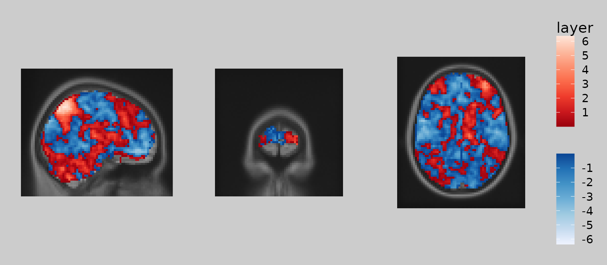
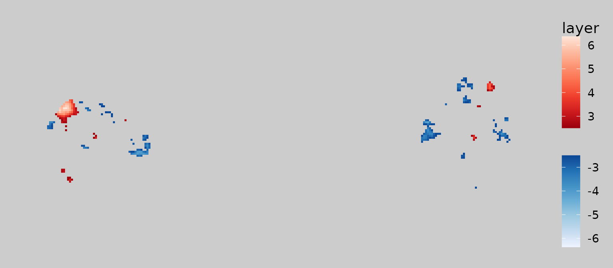
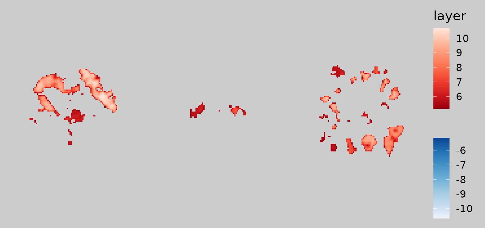
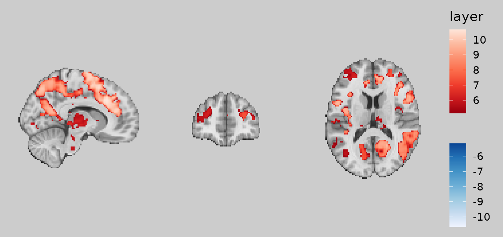
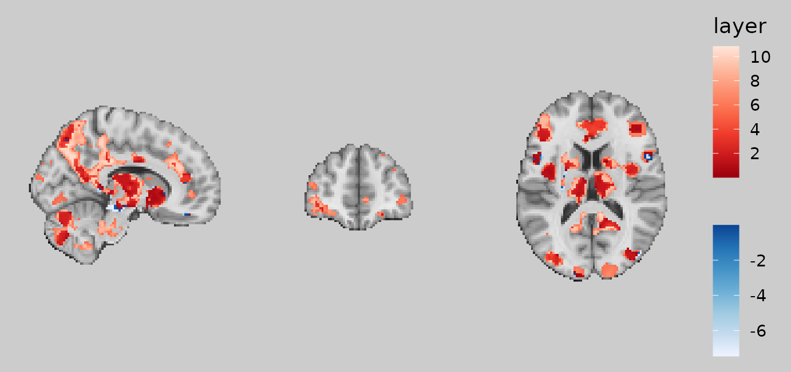
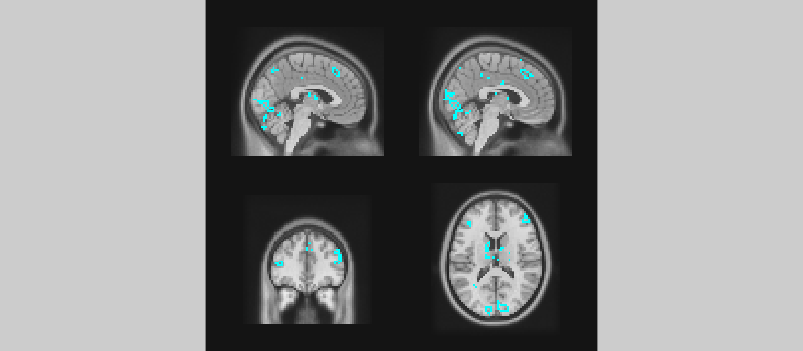
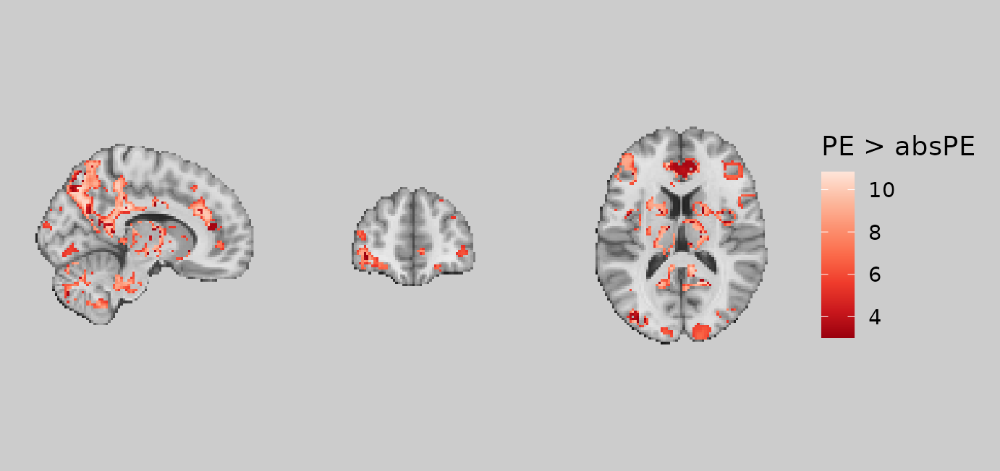
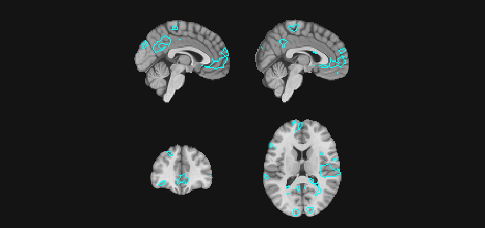

Introduction to ggbrain
Michael Hallquist
3 Oct 2022
Source:vignettes/ggbrain_introduction.Rmd
ggbrain_introduction.RmdThis vignette provides an overview of basic usage of the ggbrain package. The package seeks to generate 2D volumetric plots of brain data stored in the NIfTI format. Additional details about the structure of NIfTI data are here: https://neuroconductor.org/tutorials/nifti_basics. The ggbrain package uses ggplot2 to generate its plots, allowing users to access the wide array of popular features in ggplot2, including annotations and fine control over coloration and themes.
Note that this package is unrelated to the ggBrain package developed by Aaron Fisher in 2014. I had developed most of the current ggbrain package and had named it prior to discovering Aaron’s earlier work. The earlier ggBrain package was also not released publicly to CRAN and has not been updated much over the years, whereas ggbrain is hosted on CRAN and also offers a wider array of functionality.
Images that will be used in the demo
The package includes a few images that can be used for demonstrating its capabilities. The locations of the images on your machine are listed below.
print(c(underlay_3mm, decision_onset_3mm, echange_overlay_3mm, pe_overlay_3mm, abspe_overlay_3mm, schaefer200_atlas_3mm))## [1] "/home/runner/work/_temp/Library/ggbrain/extdata/mni_template_2009c_3mm.nii.gz"
## [2] "/home/runner/work/_temp/Library/ggbrain/extdata/decision_onset_zstat_3mm.nii.gz"
## [3] "/home/runner/work/_temp/Library/ggbrain/extdata/echange_overall_zstat_3mm.nii.gz"
## [4] "/home/runner/work/_temp/Library/ggbrain/extdata/pe_ptfce_fwep_0.05.nii.gz"
## [5] "/home/runner/work/_temp/Library/ggbrain/extdata/abspe_ptfce_fwep_0.05.nii.gz"
## [6] "/home/runner/work/_temp/Library/ggbrain/extdata/Schaefer_200_7networks_2009c_3mm.nii.gz"Building a ggbrain plot layer by layer
One can create an empty ggbrain object using the ggbrain function. This is akin to creating an empty ggplot object using ggplot().
gg_obj <- ggbrain()At this point, trying to plot the ggbrain yields a warning given that no data or geometric layers have been added.
plot(gg_obj)## Warning in self$render(guides): No brain layers added to this object yet. Use +
## geom_brain() or + geom_outline() to add.## NULLConsistent with the ggplot2 approach, additional elements can be added using the + operator, as we elaborate below. The main thing to know at this point is that you need to add all ggbrain-specific elements before adding typical ggplot components such as theme().
Also note that the order of the addition operations for images and slices (images and slices, respectively) is not important. The example order below – adding images, slices, layers, and labels – is conceptually intuitive, but could be reordered without altering the plut. As in ggplot2, the order of all geom_* layers does matter, such that geom_* layers that are added later are rendered on top of layers added earlier. For example, the geom_brain() layer for an underlay image should be added before an overlay.
Add images
A ggbrain plot must have at least one 3D image stored in NIfTI format. These images are read into ggbrain using the RNifti package. All images for a given plot must have the same image dimensions (otherwise, an error will occur). At present, ggbrain provides no internal support for interpolation to combine images with different resolutions. We encourage you to use 3dresample from AFNI for this purpose (see details in the ‘Other considerations’ section below).
The file names containing relevant images can be passed in as arguments to ggbrain or they can be appended using images() In either, it is important to provide a name for the image that is used internally to refer to the image in contrasts, labels, or other operations. If you do not provide a name, you will see a warning:
Warning message:
In private$set_images(images, fill_holes, clean_specks) :
The images vector does not contain any names. This may lead to weird behaviors downstream if 'underlay' and 'overlay' are requested.Note that the image name of ‘underlay’ has a special meaning in the package. Specifically, using this name will set a default color scale that is grayscale and will not show the legend of this scale in the plot. You don’t have to use ‘underlay’ but it can make things a bit simpler if you have a conventional plot that shows an anatomical scan underneath functional activations.
You can add many images at once by providing a named vector:
Or you can add many images in independent images steps. Note that the order of addition is not important.
Adding slices
After adding images to the ggbrain object, the next step is to specify which slices should be displayed on the plot. This is achieved using the slices() function. Following standard neuroimaging terminology, we can add axial, sagittal, and coronal slices.
The order of the addition operations, whether within a single slices() call or in a sequence of calls like slices("x=12") + slices(c("y=15", "z=10")), determines the order of panels on the rendered plot from upper left to lower right (following the standard facet_wrap() conventions in ggplot2). Thus, consider the order in which you wish the panels to appear so that the slice additions follow this order.
Adding slices by spatial position
The most conventional approach is add slices based on their spatial position along one of three cardinal axes, x/sagittal, y/coronal, or z/axial. You can determine the locations of interest using an interactive image viewer such as afni or fsleyes. Or, as described below, you could add a montage of images, add the coordinate labels on the panels, then choose the coordinates of the slices that are most relevant.
You can add one or more slices using slices() by passing a character vector of positions.
This will add one sagittal slice (x=10), one coronal (y=70), and one axis (z=15).
Adding slices by quantile
If you want to use standardized coordinates in terms of percentiles, rather than spatial coordinates, you can append % at the end of the slices() specification. This will find the position of the corresponding slice along the axis between 0% and 100%. These percentiles are computed based on the slices that are not entirely empty (i.e., not all zero).
Adding slices with additional aesthetic details
If you would like to alter specific aesthetic elements of the slices such as the panel title, border, or axis labels, these can be added as arguments to slices(). Aesthetic arguments that will alter the appearance of the relevant slices include:
-
title: The panel title -
bg_color: The background color of the panel -
text_color: The color of text on the panel -
border_color: The color of a border around the panel -
border_size: The size (thickness) of the border around the panel. Default is NULL (none). -
xlab: The x axis label of the panel -
ylab: The y axis label of the panel -
theme_custom: A ggplot2theme()(or list of theme calls) added to this panel that customizes its appearance.
Adding montages
If you would like a set of slices along one of the image planes to form a montage, you can use the montage() convenience function to specify the inputs to slices(). The arguments are
-
plane: “sagittal”, “coronal”, or “axial” (“x”, “y”, and “z” also work) -
n: the number of slices to render along this plane -
min: the lowest quantile to be included (between 0 and 1). Default: 0.1 -
max: the highest quantile to be included (between 0 and 1). Default: 0.9 -
min_coord: the lowest spatial position to be included. Mutually exclusive with quantile approach. Default: NULL -
max_coord: the highest spatial position to be included. Mutually exclusive with quantile approach. Default: NULL
The code below adds 10 axial slices between the 10th and 90th percentiles.
This code adds 5 sagittal slices between the x = -10 and x = 10 (millimeters, in image coordinates).
Adding brain overlay layers to a plot
Now that we have defined the images to read and the slices to render, we need to map the numeric values in the slices to the points on the plot. This is achieved by geom_brain(), which is essentially an extension of geom_raster() from ggplot2. The numeric values in the slices fill squares on the plot, essentially forming ‘pixels’.
As with standard ggplot2 objects, the fill color of these pixels is determined by a scale_fill_* scale, allowing you to have fine control over the coloration.
Extending geom_raster(), the geom_brain() layer supports the following standards:
-
interpolate: if TRUE,geom_rastersmooths the layer, rather than rendering discrete squares. -
alpha: A number between 0 and 1 controlling the alpha transparency of the layer -
show_legend: If TRUE (default), a legend mapping the numeric values to a color scale is included in the panel -
fill: A color to be used to fill all non-NA pixels. In ggplot2 terms, this is ‘setting’ the color of all pixels, as opposed to ‘mapping’ the color to the numeric value via a scale. -
mapping: The aesthetic mapping between the data and the raster layer. In general, the default ofaes(fill=value)should be retained for parametric layers (i.e., where the color of pixels should map to a continuous scale). But as detailed in a subsequent section, the fill can mapped to label columns in a categorical image (e.g., atlas).
Relative to standard ggplot2 conventions, the use of geom_brain() requires that you specify details about the fill color scale when the layer is added. This results from the fact that ggbrain objects re-use the ‘fill’ geometry when layers are overlaid. For example, if you have an anatomical underlay with a grayscale fill and a statistical overlay with a color fill, each layer needs to have its own fill scale (with a scale_fill_* object). This is achieved internally using the ggnewscale package.
The ‘take-home message’ is that you need to specify fill scale information as part of the geom_brain() call. Here are the key arguments:
-
limits: a two-element vector that if provided, sets the upper and lower bounds on the scale -
breaks: a function to draw the breaks on the scale. The default isinteger_breaks(), which draws a few integer-valued breaks (usually, 5) between the min and max of the scale. -
unify_scale: if TRUE (default), the color scale across panels (slices) will be equated. If FALSE, each panel will apply the color scale independently such that the min and max are slice-dependent. -
fill_scale: ascale_fill_*object use for mapping the numeric values in the data to the fill channel on the plot. Standard scales such asscale_fill_viridis_c()can be used for continuous layers. Note that the package also provides ascale_fill_bisided()option that, if added, creates separate color scales for the positive and negative pixels on the plot. This is a conventional approach in displays of fMRI activation maps where, for example, positive modulation is mapped to warm colors (reds) while negative modulation is mapped to cool colors (blues). Note thatscale_fill_bisided()has arguments ofneg_scaleandpos_scalethat allow the scales used for negative and positive values, respectively, to be specified directly.
Defining an image layer
The geom_brain() function includes an argument called definition. This controls the numeric values that are selected for display on the layer. The simplest definition is to name the image to be displayed. Recall that when you use images(), you provide names for the images. These are used as a reference by ggbrain to interpret your layer definitions.
For example, here I want to render the underlay and overlay layers with their numeric values:
# define a reusable object that has the same images and slices
gg_base <- ggbrain(bg_color = "gray80", text_color = "black") +
images(c(underlay = underlay_3mm, overlay = echange_overlay_3mm)) +
slices(c("x = 10", "y = 70", "z = 15"))
gg_obj <- gg_base +
geom_brain(definition = "underlay", fill_scale = scale_fill_gradient(low = "grey8", high = "grey62"), show_legend = FALSE) +
geom_brain(definition = "overlay", fill_scale = scale_fill_bisided(), show_legend = TRUE)Now that we have geom_* layers in our ggbrain object, we can finally plot our figure to see the result.
gg_obj$render() +
plot_annotation(theme = theme(plot.background = element_rect(fill = "blue", color = NA)))
Defining subset layers
Oftentimes, we wish to modify the display by selecting a subset of values to display. One of the most common applications is thresholding of voxelwise statistics so that small/nonsignificant values are omitted. To achieve this, geom_brain() supports standard subsetting syntax used in R. Here is an example of thresholding the overlay layer so that the absolute (z) statistic is above 2.5:
gg_obj <- gg_base +
geom_brain(definition = "overlay[abs(overlay) > 2.5]", fill_scale = scale_fill_bisided(), show_legend = TRUE)
plot(gg_obj)
Note how ‘overlay’ is treated as an R object that is subset using square brackets. The subsetting expression inside the brackets uses standard R syntax and can reference other images currently in the ggbrain object. For example, you could display overlay values only where the underlay is greater than 10:
gg_obj <- gg_base +
geom_brain(definition = "underlay") +
geom_brain(definition = "overlay[underlay > 10]", fill_scale = scale_fill_bisided(), show_legend = TRUE)
plot(gg_obj)
Finally, note that one can combine subsetting expressions using logical operators & and | , as in standard R syntax for vector operations. For example, here’s how you could include pixels where abs(overlay) > 2.5 and underlay > 20:
gg_obj <- gg_base +
geom_brain(definition = "underlay") +
geom_brain(
definition = "overlay[abs(overlay) > 2.5 & underlay > 20]",
fill_scale = scale_fill_bisided("z"), show_legend = TRUE
)
plot(gg_obj)
Defining a contrast layer
The ggbrain package also supports full contrasts in which images can be added, subtracted, multiplied, or divided. For example, one might wish to see the difference between one activation map and another. Of course, many such contrasts can be computed in the GLM estimation, but it is often useful to compute certain contrasts after the fact.
For example, what if we have signed and absolute reward prediction error maps from a simple reinforcement learning paradigm? We might be interested to look at areas that are more strongly modulated by signed than absolute PEs.
These contrasts can either be defined inline within the definition field of geom_brain or geom_outline. Or, they can be added to the ggbrain object in advance using the define() function.
gg_obj <- ggbrain(bg_color = "gray80", text_color = "black") +
images(c(underlay = underlay_3mm, pe = pe_overlay_3mm, abspe = abspe_overlay_3mm)) +
slices(c("x = 10", "y = 50", "z = 15")) +
define("diff := pe - abspe") +
geom_brain(definition = "diff", fill_scale = scale_fill_bisided(symmetric = FALSE), show_legend = TRUE)
plot(gg_obj)
An equivalent plot would be achieved by including the definition inline:
gg_obj <- ggbrain(bg_color = "gray80", text_color = "black") +
images(c(underlay = underlay_3mm, pe = pe_overlay_3mm, abspe = abspe_overlay_3mm)) +
slices(c("x = 10", "y = 50", "z = 15")) +
geom_brain(definition = "diff := pe - abspe", fill_scale = scale_fill_bisided(symmetric = FALSE), show_legend = TRUE)The advantage of define() is that you can re-use and modify contrasts in multiple layers. Here, we subset the difference to only voxels where the PE - abs(PE) contrast is strongly in favor of signed PEs (i.e., positive difference in the z-statistic > 3).
gg_obj <- ggbrain(bg_color = "gray80", text_color = "black") +
images(c(underlay = underlay_3mm, pe = pe_overlay_3mm, abspe = abspe_overlay_3mm)) +
slices(c("x = 10", "y = 50", "z = 15")) +
define("diff := pe - abspe") +
geom_brain(definition = "underlay") +
geom_brain(definition = "diff[diff > 3]", fill_scale = scale_fill_distiller("PE > absPE", palette="Reds"), show_legend = TRUE)
plot(gg_obj)
Adding outlines
In addition to filling in regions with colors, brain plots often benefit from being able to outline, rather than fill, regions. This is accomplished using geom_outline(). This geometry finds the boundaries of distinct clusters in the image/contrast and traces the boundaries with a line of some thickness (controlled by size).
For continuous images (e.g., z-statistics), one typically sets the outline color using geom_outline(outline="cyan") or whatever color is desired. This draws the outlines for non-NA voxels in a single color. For categorical images (e.g., anatomical or functional atlases), it may be useful to map the color of the outlines to a categorical label such as network or region. This is accomplished with geom_outline(mapping=aes(outline=roi_name)) or whatever column in the data corresponds to the categories one wishes to draw with different colors.
Here, we might wish to outline voxels whose z-statistics exceed \(|z| > 3\) for the decision onset regressor. These voxels represent areas that are sensitive to the onset of the decision phase of the reinforcement learning trial.
gg_obj <- ggbrain() +
slices(c("x = -2", "x=2", "y = 40", "z = 15")) +
images(c(underlay = underlay_3mm, onset = decision_onset_3mm)) +
geom_brain(definition = "underlay") +
geom_outline(definition = "onset[abs(onset) > 3]", size = 1, outline = "cyan")
plot(gg_obj)
Converting to a ggplot object and displaying the plot
For reasons that are somewhat boring (having to do with how R handles S3 operators like +), the brain-related addition steps for ggbrain object must come before generic ggplot2 modifications of the plot. For your ggbrain object to be a ggplot object, it must be rendered using the render() function. This function compiles the images, layers, and slices into the requested plot and returns it as a patchwork object. The patchwork package is extremely useful for combining ggplot objects in different layouts. More details can be found here: https://patchwork.data-imaginist.com.
In ggbrain, each panel is ggplot object and the panels are composited using wrap_plots in patchwork.
The key message here is: place ggbrain-specific additions before render() and ggplot-specific additions afterwards.
# without a render step
gg_obj <- ggbrain() +
slices(c("x = -2", "x=2", "y = 40", "z = 15")) +
images(c(underlay = underlay_3mm, onset = decision_onset_3mm)) +
geom_brain(definition="underlay") +
geom_outline(definition = "onset[abs(onset) > 3]", size=1, outline="cyan")
class(gg_obj)## [1] "ggb" "R6"
# note the different class after render
gg_obj <- ggbrain() +
slices(c("x = -2", "x=2", "y = 40", "z = 15")) +
images(c(underlay = underlay_3mm, onset = decision_onset_3mm)) +
geom_brain(definition="underlay") +
geom_outline(definition = "onset[abs(onset) > 3]", size=1, outline="cyan") +
render()
class(gg_obj)## [1] "patchwork" "gg" "ggplot"
# add a different theme to all panels and add an overall title
gg_obj + plot_annotation(title="Overall title") & theme_minimal()
Note, however, that you don’t necessarily need to use render() at all. When you call plot() on a ggbrain object, the render happens automatically behind the scenes, allowing calls like:
gg_obj <- ggbrain() +
slices(c("x = -2", "x=2", "y = 40", "z = 15")) +
images(c(underlay = underlay_3mm, onset = decision_onset_3mm)) +
geom_brain(definition="underlay") +
geom_outline(definition = "onset[abs(onset) > 3]", size=1, outline="cyan")
plot(gg_obj) + plot_annotation(title = "Overall")
Another point is that by keeping your plots as ggbrain object – that is not adding render() – you can continue to add brain-related calls like geom_brain() or annotate_coordinates() to them. Thus, you may wish to use the plot(gg_obj) + [ggplot2 stuff here] approach above so that the ggbrain
Saving ggbrain plots to file
After you see your beautiful brain plot on the screen, you may soon wish to have it as an image file for publications or presentation. As with standard ggplot objects, you can use ggsave() or the usual graphics device (e.g., pdf) and dev.off() approach from base R.
Note that if you pass a ggbrain object directly to ggsave, it will complain that the plot is not a ggplot object. We can just pass a rendered version like so:
ggsave(filename="my_brain_plot.pdf", gg_obj$render(), width=15, height=10)## agg_png
## 2Like with standard ggplot, one of the beautiful aspects of saving files in vector formats such as PDF is that you can open and edit the elements of the plot using vector editors like Adobe Illustrator or Inkscape!
One small note: some PDF viewers will automatically interpolate the ‘raster’ parts of a PDF, leading the image to look blurry even though it isn’t really so. I have seen this in recent version of Apple Preview (which is otherwise a nice piece of software). Thus, if you want to see precisely how your PDFs look coming out of ggbrain, I would suggest opening them in Adobe Acrobat Viewer.
Next steps
Now that you understand the basics of ggbrain plots, I encourage you to read the ggbrain aesthetics vignette, which provides more detailed guidance about how to clean up the appearance of brain displays and to add more complex annotations.